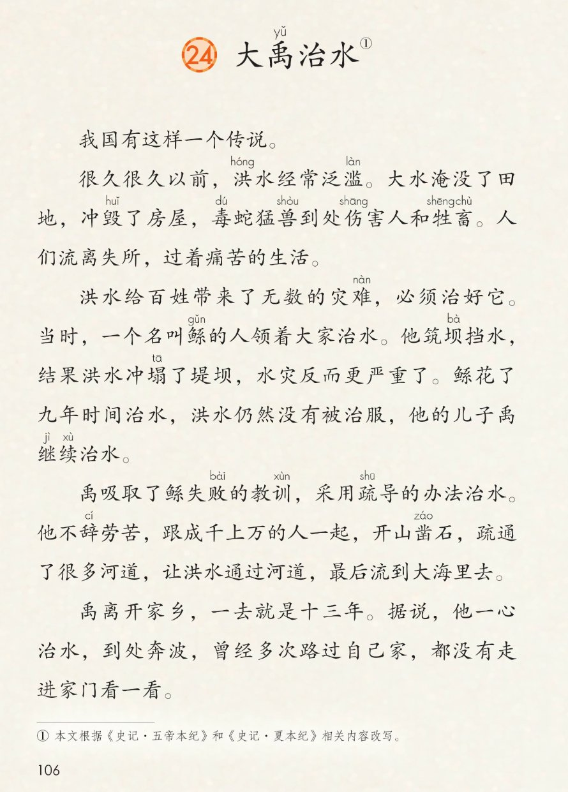
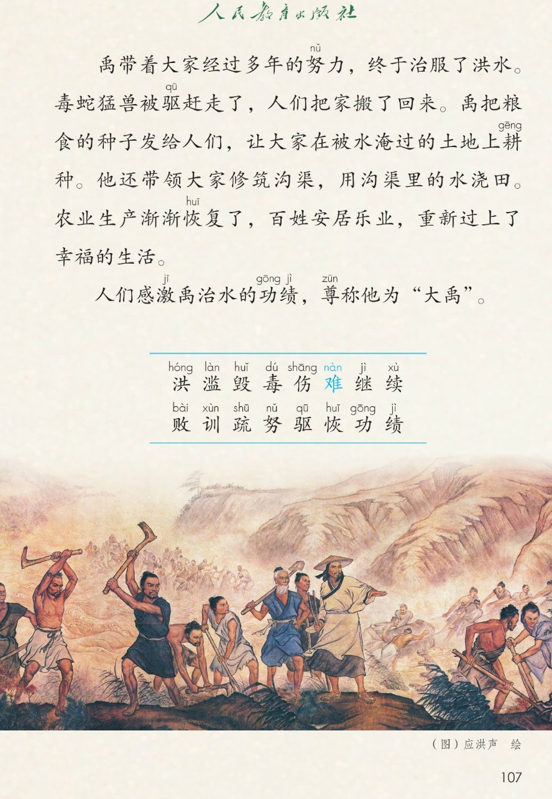
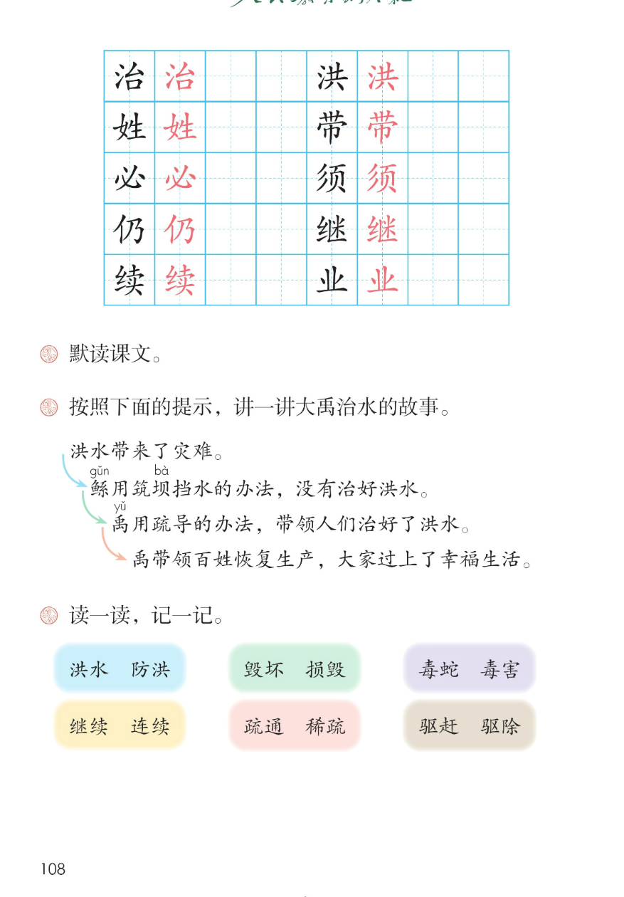

×
🔊 手机听不到声音怎么办？
① 先把手机
媒体音量调大 ，确认没开静音、没连蓝牙耳机；在微信里打开的，点右上角「⋯ → 用浏览器打开」。
② 还是没声音？到应用商店免费下载
Microsoft Edge 浏览器 （它自带朗读发声），用它打开本页面就能出声。
③ 换了 Edge 仍然没声音，说明这部手机的
硬件/系统不支持 网页朗读（多为老旧机型）；近几年买的新手机一般都能正常播放。
→ 打开声音自检
🌊 第 24 课《大禹治水》· 有声图文带读
统编版语文 · 第八单元·阅读 · 课本 第 106~108 页 · 传说故事
课文 7 段 · 共 18 句
会认字 16
会写字 10
听写词 10
近义词 4 组
深入理解 8 题
本课本领 默读·按提示讲故事·读传说
🎧 五步学（可随时点任意一句、一个字、一个词单独听）： ① 听读课文 ——七段传说故事，一句一句读，读到哪一句哪一句发光；开「跟读」后读完一句留时间让你自己读。② 学字词 ——16 个会认字、10 个会写字（含书写提示），点一个读一个。③ 词语·听写·造句 ——先读课后题「读一读，记一记」六组词，再听写 10 个词（读两遍→你写→报答案→听示范句），最后听 4 组近义词辨析。④ 深入理解 ——8 道题（认知 / 理解 / 运用 / 拓展），开放题答案不唯一，先想后看。⑤ 分节朗读·想象画面 ——按五步想象大禹治水的画面，再听七位朗读者分段读这篇课文。
📚 第八单元·阅读（本课定位）： 第22课《羿射九日》 → 第23课《黄帝的传说》 → 第24课《大禹治水》 → 后续课文等学到再补
点段前的 ①②③④⑤⑥⑦ 听整段
🔁 跟读模式：关
👁 隐藏注音（自测用）
注音只标本课要认、要写的字和课本明确标了音的字，读音来自课本第 107 页生字表
🎤 朗读要求（老师标准） 洪 读第二声，滥 读第四声，毁 读第三声，毒 读第二声，伤 读第一声，难 在灾难里读第四声（困难读第二声），继 读第四声，续 读第四声，败 读第四声，训 读第四声，疏 读第一声，努 读第三声，驱 读第一声，恢 读第一声，功 读第一声，绩 读第四声；鲧 读第三声，坝 读第四声，塌 读第一声，辞 读第二声，凿 读第二声，牲畜 读 shēng chù，耕 读第一声；不添字、不漏字 ：逗号停得短，句号停得长，一句一句读清楚；读出传说的起伏 ：洪水为灾读得低沉，禹治水读得坚定，治服洪水后读得欢快、幸福；默读不出声、不指读 ：在心里读，眼睛看，脑子想。
①
我国有这样一个传说。
②
很久很久以前，洪hóng 水经常泛滥làn 。
大水淹没了田地，冲毁huǐ 了房屋，毒dú 蛇猛兽到处伤shāng 害人和牲shēng 畜chù 。
人们流离失所，过着痛苦的生活。
③
洪hóng 水给百姓带来了无数的灾难nàn ，必须治好它。当时，一个名叫鲧gǔn 的人领着大家治水。
他筑坝bà 挡水，结果洪hóng 水冲塌tā 了堤坝bà ，水灾反而更严重了。
鲧gǔn 花了九年时间治水，洪hóng 水仍然没有被治服，他的儿子禹继jì 续xù 治水。
④
禹吸取了鲧gǔn 失败bài 的教训xùn ，采用疏shū 导的办法治水。
他不辞cí 劳苦，跟成千上万的人一起，开山凿záo 石，疏shū 通了很多河道，让洪hóng 水通过河道，最后流到大海里去。
⑤
禹离开家乡，一去就是十三年。
据说，他一心治水，到处奔波，曾经多次路过自己家，都没有走进家门看一看。
⑥
禹带着大家经过多年的努nǔ 力，终于治服了洪hóng 水。
毒dú 蛇猛兽被驱qū 赶走了，人们把家搬了回来。禹把粮食的种子发给人们，让大家在被水淹过的土地上耕gēng 种。
他还带领大家修筑沟渠，用沟渠里的水浇田。
农业生产渐渐恢huī 复了，百姓安居乐业，重新过上了幸福的生活。
⑦
人们感激禹治水的功gōng 绩jì ，尊称他为“大禹”。
🤔 想一想（点我可跳过）
点一张图，听读整页

第 106 页 · 课文一至五段

第 107 页 · 课文六七段·会认字·插图

第 108 页 · 田字格·课后题
📖 人教版《语文》二年级下册 · 课本第 106~108 页 · 图片仅供个人学习，版权归人民教育出版社所有
点一个字，听读音、词语和课文里的句子
结构、部首、笔画与书写提示为通用规范，供参考，以教材和老师的指导为准
治
zhì
治水 · 治理
8 画 · 左右（氵）
三点水写窄，台字写稳
洪
hóng
洪水 · 防洪
9 画 · 左右（氵）
三点水写窄，共字横平行
姓
xìng
百姓 · 姓名
8 画 · 左右（女）
女字旁写窄，生字竖要正
带
dài
带领 · 带头
9 画 · 上下（巾）
上面三笔匀称，巾字竖要直
必
bì
必须 · 必要
5 画 · 独体字（心）
斜钩要长，三点匀称
须
xū
必须 · 胡须
9 画 · 左右（彡）
三撇方向一致，页字写稳
仍
réng
仍然 · 仍旧
4 画 · 左右（亻）
单人旁写窄，乃字要稳
继
jì
继续 · 继承
10 画 · 左右（纟）
绞丝旁写窄，右边穿插到位
续
xù
继续 · 连续
11 画 · 左右（纟）
绞丝旁写窄，右边写稳
业
yè
安居乐业 · 作业
5 画 · 独体字
两点对称，竖要正直，底横要长
点一行，听词语和课后题的答案
📖 课后题（课本第 108 页照录） ：① 默读课文。 ② 按照下面的提示，讲一讲大禹治水的故事（洪水带来了灾难 → 鲧用筑坝挡水的办法，没有治好洪水 → 禹用疏导的办法，带领人们治好了洪水 → 禹带领百姓恢复生产，大家过上了幸福生活）。 ③ 读一读，记一记（洪水—防洪 / 毁坏—损毁 / 毒蛇—毒害 / 继续—连续 / 疏通—稀疏 / 驱赶—驱除）。
洪水 洪水 防洪
毁坏 毁坏 损毁
毒蛇 毒蛇 毒害
继续 继续 连续
疏通 疏通 稀疏
驱赶 驱赶 驱除
读两遍 → 你在纸上写 → 报答案 → 听示范句
准备听写 · 共 10 个词
○ ○ ○
点下面的「开始听写」，听到一个词就写一个词。
▶ 开始听写
🔁 再读一遍
👁 看答案
点词听读，点句子听示范句，再自己说一句
1 治水 会写字 · 治
示范句：禹采用疏导的办法治水。
✏️ 我也能说：谁在治水
2 洪水 会写字 · 洪
示范句：很久很久以前，洪水经常泛滥。
✏️ 我也能说：什么被洪水怎样
3 百姓 会写字 · 姓
示范句：百姓安居乐业，过上了幸福的生活。
✏️ 我也能说：百姓在做什么
4 带领 会写字 · 带
示范句：禹带领大家修筑沟渠。
✏️ 我也能说：谁带领谁做什么
5 必须 会写字 · 必
示范句：洪水给百姓带来了灾难，必须治好它。
✏️ 我也能说：什么必须做
6 仍然 会写字 · 仍
示范句：洪水仍然没有被治服。
✏️ 我也能说：什么仍然怎样
7 继续 会写字 · 继
示范句：他的儿子禹继续治水。
✏️ 我也能说：谁继续做什么
8 安居乐业 会写字 · 业
示范句：百姓安居乐业，重新过上了幸福的生活。
✏️ 我也能说：谁安居乐业
9 灾难 课文词 · 难
示范句：洪水给百姓带来了无数的灾难。
✏️ 我也能说：什么带来了灾难
10 疏通 课文词 · 疏
示范句：他们疏通了很多河道，让洪水流到大海里去。
✏️ 我也能说：疏通了什么
相同点 / 不一样在哪 / 各造一句
毁坏 — 损毁
相同：都表示弄坏、破坏 。
不一样：毁坏 多指被大水、大火等破坏；损毁 多指东西受损失去原样。
毁坏：大水冲毁了房屋。
继续 — 连续
相同：都和接着做 有关。
不一样：继续 是停一停再接着做；连续 是一个接一个、中间不间断。
继续：他的儿子禹继续治水。
疏通 — 疏导
相同：都表示把堵塞的地方打通 。
不一样：疏通 重在把河道、管道弄通；疏导 重在引导水或人往该去的地方走。
疏通：疏通了很多河道。
驱赶 — 驱除
相同：都表示赶走 。
不一样：驱赶 是把人或动物赶走；驱除 是赶走还要除掉。
驱赶：毒蛇猛兽被驱赶走了。
流离失所 人们流离失所，过着痛苦的生活
成千上万 他不辞劳苦，跟成千上万的人一起
安居乐业 农业生产渐渐恢复了，百姓安居乐业
路过家门不进 曾经多次路过自己家，都没有走进家门看一看
标「答案不唯一」的题，说得有道理都对
认知 洪水给百姓带来了怎样的灾难？看解析
🤔 想一想
解析：
被大水淹没了
被冲毁了
毒蛇猛兽到处伤害人和牲畜
人们流离失所，生活痛苦
认知 鲧是怎么治水的？结果怎样？看解析
🤔 想一想
解析：
筑坝挡水
洪水冲塌堤坝，水灾更严重
治了九年，仍然没治服
理解 禹治水的方法和鲧有什么不同？他是怎么做的？看解析
🤔 想一想
解析：
鲧失败的教训
疏导，不再硬挡
开山凿石，疏通河道
洪水流到大海里去
理解 从哪些地方看出禹一心治水？看解析
🤔 想一想
解析：
一去就是十三年
到处奔波治水
多次路过家门都不进去
理解 按照下面的提示，讲一讲大禹治水的故事。看解析
🤔 想一想
解析：
洪水带来了灾难
鲧筑坝挡水，没有治好
禹疏导，治好了洪水
恢复生产，幸福生活
运用 洪水治服以后，人们的生活发生了什么变化？用课文里的话说一说。看解析
🤔 想一想
解析：
毒蛇猛兽被驱走，搬回家
领种子耕种，修沟渠浇田
安居乐业，幸福生活
运用 用“继续”说一句话。看解析
🤔 想一想
解析：
谁停一停再接着做什么
学习、游戏、赶路都可以
🌈 答案不唯一，说得有道理都对
拓展 人们为什么尊称禹为“大禹”？你觉得大禹是个怎样的人？看解析
🤔 想一想
解析：
治水功绩大，人们感激
吸取教训，方法对头
做事用心、坚持不放弃
点一步，听这一步
💬 想象支架：先 想洪水为灾 → 再 想鲧治水 → 接着 想禹疏导 → 然后 想过家门不进 → 最后 想百姓安乐。
点一张卡，听这一节的句子
🌈 第1节·朗读者
第1节：我国有这样一个传说。
💬 开头一句，讲出这是传说，读得平静
🌈 第2节·朗读者
第2节：很久很久以前，洪水经常泛滥。
💬 灾难一段，读得低沉、同情
🌈 第3节·朗读者
第3节：洪水给百姓带来了无数的灾难，必须治好它。
💬 鲧治水一段，先抱希望后失望
🌈 第4节·朗读者
第4节：禹吸取了鲧失败的教训，采用疏导的办法治水。
💬 禹疏导一段，读得坚定、有力量
🌈 第5节·朗读者
第5节：禹离开家乡，一去就是十三年。
💬 十三年一段，读得敬佩
🌈 第6节·朗读者
第6节：禹带着大家经过多年的努力，终于治服了洪水。
💬 治服洪水一段，读得欢快、幸福
🌈 第7节·朗读者
第7节：人们感激禹治水的功绩，尊称他为大大禹。
💬 结尾一句，读得崇敬，大禹读响亮